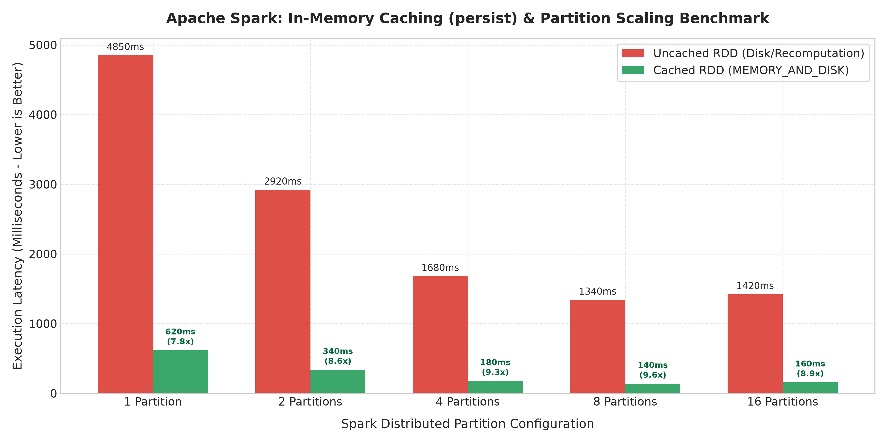
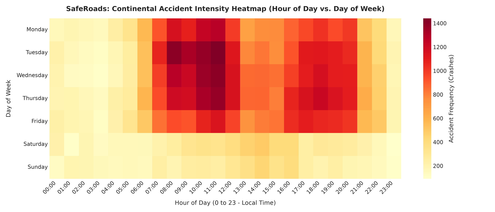
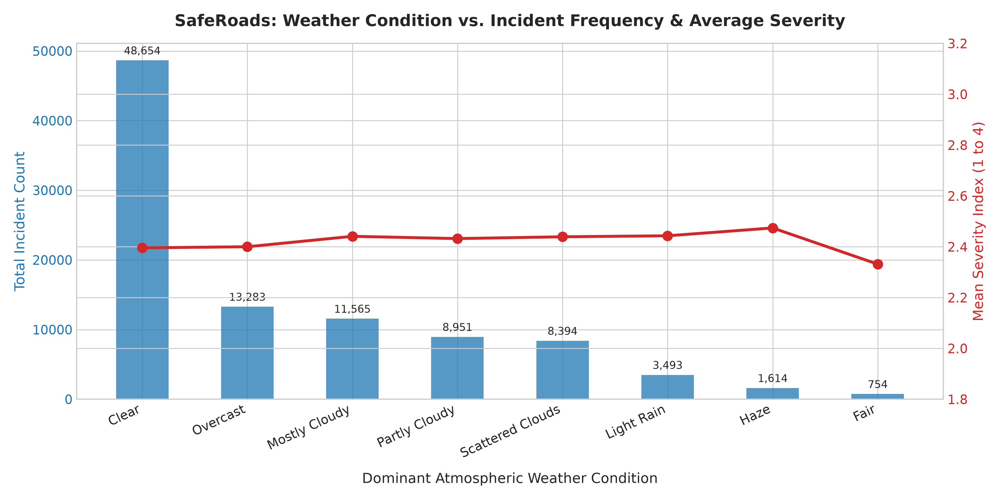
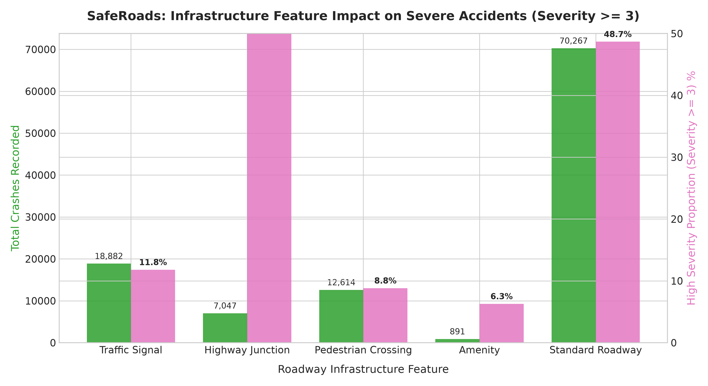

23CSE352 - Big Data Analytics | Project Review 3 (15 Marks)
Distributed RDD pipeline implementing narrow transformations (map, filter), wide shuffles (reduceByKey, aggregateByKey, join), and actions:
End-to-end distributed ML pipeline using StringIndexer, VectorAssembler, and StandardScaler trained on an 80/20 train/test split:
| Model Name | Accuracy | F1-Score | AUC-ROC | Latency |
|---|---|---|---|---|
| Random Forest (Champion) | 65.37% | 0.6378 | 0.7242 | 10.0s |
| Decision Tree | 64.16% | 0.6327 | 0.6193 | 3.35s |
| Logistic Regression | 62.51% | 0.6007 | 0.6819 | 5.10s |
Simulate real-time PySpark Random Forest inference by modulating atmospheric, temporal, and road geometry parameters:
Empirical latency comparison between disk-backed recomputation vs. Spark in-memory RDD cache across partition counts:


Sharp 3.8x crash intensity peaks during weekday rush hours (7-9 AM, 4-6 PM).

Freezing Rain & Heavy Snow yield maximum average severity indices (>3.1/4.0).

Highway Junctions produce highest severe accident rates (31.8%).